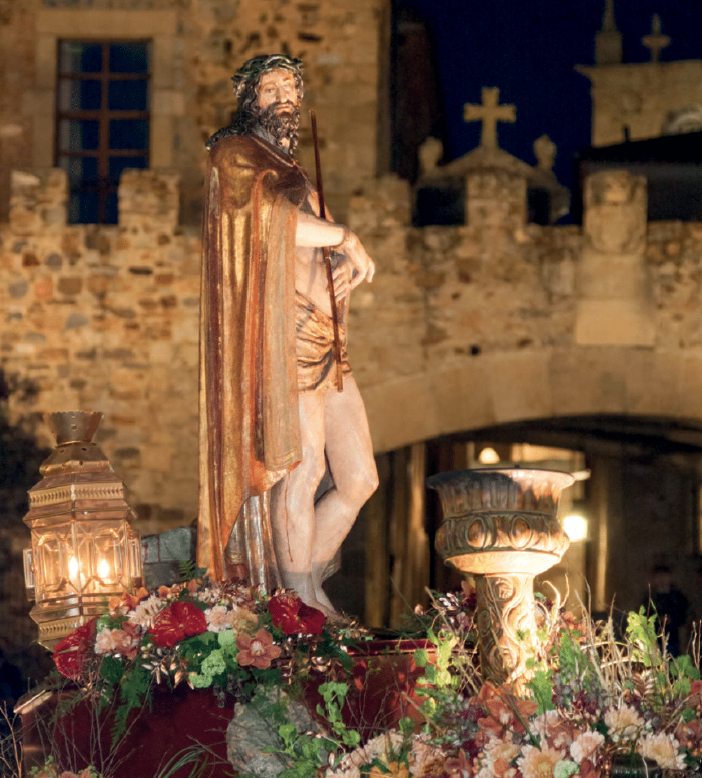
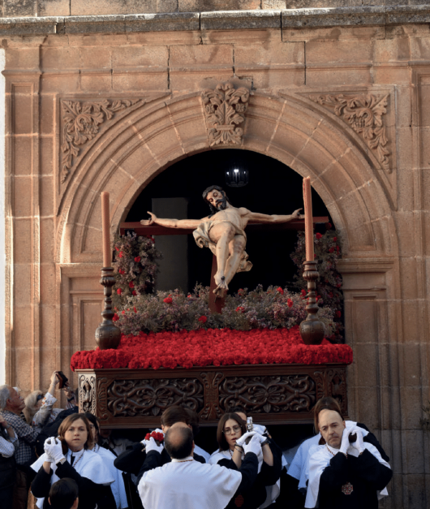

Salida: Iglesia del Buen Pastor, 22:00h
Llegada: Iglesia del Espíritu Santo, 00:00h
PASO: Santísimo Cristo de la preciosa Sangre (Casa de Imaginería Religiosa Serquella, 1970).
ACOMPAÑAMIENTO MUSICAL: Banda de C.C.T.T Santísimo Cristo del Humilladero /(Cáceres).
HÁBITO: Túnica granate, capuchón de color púrpura sin capirote con el escudo de la Cofradía, cíngulo y guantes blancos y medalla
ITINERARIO: iglesia del buen pastor, Costa Rica, Colombia, El Salvador, Bolivia, Nicaragua, Ecuador, Colombia, La Roche Sur Yon e Iglesia del Espíritu Santo
Salida: Iglesia de San Juan, 12:15h.
Bendición de Palmas: Plaza de San Juan, 12:15h.
Llegada: Iglesia de San Juan, 15:00h
PASO: Entrada Triunfal de Jesús en Jerusalén (Casa Bayroda Basols, 1946).
ACOMPAÑAMIENTO MUSICAL: Banda Infantil de C.C.T.T. Espíritu Santo (Cáceres) y A.M. Virgen de la Misericordia (Cáceres).
HÁBITO: Túnica blanca ceñida con cíngulo de lana amarilla, esclavina morada de terciopelo con bordado dorado en forma de palma. Medalla, guantes blancos y zapato de color negro.
ITINERARIO: Iglesia de San Juan, plaza de San Juan, San Pedro, Donoso Cortés, Pizarro, Soledad, plaza de Santa Clara, Puerta de Mérida, Adarves de la Puerta de Mérida, del Padre Rosalío, de Santa Ana, de la Estrella, Arco de la Estrella, Plaza Mayor, Pintores, plaza de San Juan e Iglesia de San Juan
Salida: Parroquia Beato Marcelo Spínola, 15:40 h.
Estación de Penitencia: Iglesia de San Juan, 19:10 h.
Llegada: Parroquia Beato Marcelo Spínola, 22:30 h.
PASO: Nuestro Padre Jesús de la Humildad en su Prendimiento. (Antonio Jesús Dubé Herdugo, 2008). Centurión Romano, 2016; Sumo Sacerdote, 2017; Judas Iscariote, 2018; San Juan Evangelista, 2020; y San Pedro, 2022. (Ventura Gómez Rodríguez).
ACOMPAÑAMIENTO MUSICAL: A.M. La Paz (Mérida).
HÁBITO: Túnica de Nazareno y capa de sarga de color beige, con botonadura de terciopelo verde y cordón de seda color verde y oro. Antifaz de terciopelo verde con capirote y emblema de la Hermandad. Zapatos y calcetines negros.
ITINERARIO: Parroquia Beato Marcelo Spínola, Gredos, Ordesa, glorieta Manuel Domínguez Lucero, Ruta de la Plata, Virgen de Guadalupe, Santa Joaquina de Vedruna, San Pedro de Alcántara, avenida de España (pares), Fuente Luminosa, avenida de España (impares), San Antón, San Pedro, plaza de San Juan, Roso de Luna, Donoso Cortés, San Pedro, San Antón, avenida de España (impares), Fuente Luminosa, avenida de España (pares), San Pedro de Alcántara, Santa Joaquina de Vedruna, Virgen de Guadalupe, Ruta de la Plata, glorieta Manuel Domínguez Lucero, Ordesa, Gredos y Parroquia Beato Marcelo Spínola.
Salida: Capilla del Colegio San José (Santa Gertrudis), 19:00 h.
Llegada: Capilla del Colegio San José (Santa Gertrudis), 23:00 h.
PASO: Dolorosa Esperanza (paso infantil) y Señor de las Penas (Pedro de La Cuadra, finales del S. XVI).
ACOMPAÑAMIENTO MUSICAL: Banda de C.C.T.T. Santísimo Cristo del Humilladero (Cáceres).
HÁBITO: Túnica color hueso, verduguillo y cíngulo morado, guantes, calcetines y zapatillas blancas de esparto. Los niños sustituyen el verduguillo por turbante hebreo morado.
ITINERARIO: Capilla del Colegio San José, Santa Gertrudis, Barrio Nuevo, plaza de la Concepción, Santo Domingo, Andrada, Ríos Verdes, Margallo, Sancti Spíritu, plaza del Duque, Gabriel y Galán, Plaza Mayor, General Ezponda, plaza de la Concepción, Zurbarán, San José, Santa Gertrudis y Capilla del Colegio San José.
Salida: Iglesia de Santiago el Mayor, 19:00 h.
Llegada: Iglesia de Santiago eI Mayor, 23:45 h.
PASO: EI Señor Camino del Calvario (Cristo de La Caída: Talleres Valencia, 1956; La Verónica: Talleres Hermanos Bellido, 1903) y Nuestra Señora de la Misericordia (Talleres Hijos de José Rius, 1927).
ACOMPAÑAMIENTO MUSICAL: A.M. Nuestra Señora de la Misericordia (Cáceres) y Banda Municipal de Música de Cáceres.
HÁBITO: Túnica morada, capa blanca con Cruz de Santiago sobre el hombro izquierdo, capuchón morado, cinturón de esparto. Guantes blancos, sandalias negras con calcetín blanco y medalla de hermano. Los hermanos de carga llevan la túnica morada, cordón amarillo en el cuello, cíngulo amarillo en la cintura y zapatos negros.
ITINERARIO: Iglesia de Santiago el Mayor, plaza de Santiago, Godoy, Zapatería, plaza del Duque, Gabriel y Galán, Plaza Mayor, Gran Vía, plaza de San Juan, Pintores, Plaza Mayor, General Ezponda, Santo Domingo, Andrada, Ríos Verdes, Margallo, Sancti Espíritu, plaza del Duque, Zapatería, Godoy, plaza de Santiago e Iglesia de Santiago el Mayor.
Salida: Templo Conventual de Santo Domingo, 20:00 h.
Llegada: Templo Conventual de Santo Domingo, 23:40 h.
PASO: Nuestro Padre Jesús de la Salud en su Injusta Sentencia (Rafael M. Hernández, 2009). Poncio Pilatos (Rafael M. Hernández, 2012); Centurión Romano (David Valenciano, 2005) Sanedrita y Claudia Prócula (Juan B. Jiménez, 2017 y 2019). María Santísima de La Estrella (Jose Antonio Cabello, 2014).
ACOMPAÑAMIENTO MUSICAL: A.M. Ntro. Padre Jesús Nazareno (Jerez de los Caballeros) y B.M. de Ntra. Sra. de La Soledad de La Algaba (Sevilla).
HÁBITO: Túnica color blanco con botonadura de terciopelo morado, ceñida con cordón y corona franciscanos. Capirote de terciopelo morado con el emblema de la Cofradía en el delantal y capa blanca con el escudo de la Hermandad. Zapatos y calcetines negros. Los niños llevan capelina morada con el escudo de la Hermandad o bien van vestidos de monaguillos con sotana marrón franciscana y roquete.
ITINERARIO: Templo Conventual de Santo Domingo, Santo Domingo, plaza de la Concepción, Moret, Pintores, plaza de San Juan, Roso de Luna, Donoso Cortés, Pizarro, Soledad, Hornos, de Gallegos, corredera alta de San Juan, Gran Vía, Plaza Mayor, General Ezponda, Ríos Verdes, Andrada y Templo Conventual de Santo Domingo.
Salida: S.I Concatedral Santa María, 21:00h.
Llegada: S.I Concatedral Santa María, 00:00h
PASO: Santísimo Cristo de Las Batallas (Antonio Arenas Martínez, 1953), Fervoroso Cristo del Refugio (atribuido a José de Proenza, 1780) y María Santísima de Los Dolores (Anónimo, S. XVIII).
ACOMPAÑAMIENTO MUSICAL: Grupo de Tambores propios de la Cofradía, Banda de C.C.T.T. Santísimo Cristo del Humilladero (Cáceres) y Banda Provincial de Música de la Diputación de Cáceres.
HÁBITO: Túnica roja, cíngulo amarillo, capa negra con el emblema de la Cofradía, capuchón y guantes negros. Los hermanos de carga suprimen la capa y sustituyen el capuchón por verduguillo.
ITINERARIO: S.I. Concatedral Santa María, plaza de Santa María, de la Estrella, Arco de La Estrella, Plaza Mayor (con vuelta por la paz), Pintores, plaza de San Juan, San Pedro, Donoso Cortés, Pizarro, Sergio Sánchez, plaza del Doctor Durán, corredera alta de San Juan, Gran Vía, Plaza Mayor, Arco de la Estrella, de la Estrella, plaza de Santa María y S.I. Concatedral de San María.
Salida: Parro uia de Nuestra Señora del Rosario de Fátima, 20:00 h.
Estación de Penitencia: Templo Conventual de Santo Domingo, 22:00 h.
Llegada: Parroquia de Nuestra Señora del Rosario de Fátima, 00:30 h.
PASO: Ntro. Padre Jesús de la Lealtad Despojado de sus Vestiduras (Juan Jiménez y Pablo Porras, 2021).
ACOMPAÑAMIENTO MUSICAL: Banda de C.C.T.T. Santísimo Cristo del Humilladero (Cáceres).
HÁBITO: Túnica de sarga de color blanco con botonadura verde botella, ceñida con cíngulo de color verde, escapulario verde botella y antifaz con capirote blanco. Capa de color blanco, con el escudo de la Hermandad en el lado izquierdo. Guantes y calcetines blancos y zapatillas blancas de esparto. La medalla pende del cuello debajo del antifaz. Los hermanos infantiles prescinden del antifaz, y sustituyen la capa por capelina.
ITINERARIO: Parroquia de Ntra. Sra. del Rosario de Fátima, Rafael García-Plata de Osma, Gil Cordero, plaza de América, avenida de España (impares), San Antón, San Pedro, plaza de San Juan, Pintores, Plaza Mayor, General Ezponda, Ríos Verdes, Andrada, Santo Domingo, plaza de la Concepción, Moret, Pintores, plaza de San Juan, San Pedro, San Antón, avenida de España (impares), Fuente Luminosa, avenida de España (pares), Gómez Becerra, Eladia Montesino-Espartero Averly, Gil Cordero, Rafael García-Plata de Osma y Parroquia de Ntra. Sra. del Rosario de Fátima.
Salida: Iglesia de San Juan, 20:30 h.
Llegada: Iglesia de San Juan, 23:00h.
PASO: Nuestro Padre Jesús del Perdón (Escuela Castellana, finales del s. XVII).
ACOMPANAMIENTO MUSICAL: Grupo Música de capilla "Sacrum Trío".
HÁBITO: Túnica blanca ceñida con cíngulo de lana amarilla, capa y capuchón morado de terciopelo con bordado dorado en forma de palma. Medalla, guantes blancos y zapato de color negro. Los hermanos de carga suprimen el capuchón y sustituyen la capa por esclavina morada.
ITINERARIO: Iglesia de San Juan, plaza de San Juan, Roso de Luna, Donoso Cortés, Pizarro, Soledad, Santa Clara (Convento Santa Clara), Puerta de Mérida, Adarve de la Puerta de Mérida, Olmos (Convento Jerónimas), Condes, Orellana, de la Monja, Cuesta de la Compañía, San Mateo (Convento San Pablo), Ancha, Puerta de Mérida, Santa Clara, Soledad, Hornos, de Gallegos, plaza de San Juan e Iglesia de San Juan.
Salida: Ermita del Ámparo, 23:00h.
Llegada: Iglesia de San Mateo, 02:00h.
PASO: Santísimo Cristo Nazareno del Ámparo (Escuela Castellana, 1669).
ACOMPAÑAMIENTO MUSICAL: Timbal destemplado.
HÁBITO: Túnica negra, cíngulo franciscano de esparto, capa color púrpura con el emblema de la Cofradía prendido en el hombro izquierdo, capuchón, guantes, zapatos y calcetines negros. Los hermanos de carga sustituyen el capuchón por verduguillo.
ITINERARIO: Ermita del Amparo, carretera de la Montaña, Fuente Concejo, Caleros, plaza de Santiago, Godoy, plaza del Socorro, Tiendas, plaza de Santa María, de la Estrella, Adarves de la Estrella, de Santa Ana, del Padre Rosalío, de la Puerta de Mérida, Puerta de Mérida, Ancha e Iglesia de San Mateo.
Salida: Iglesia de San Juan, 21:00 h.
Llegada: Iglesia de San Juan, 00:00 h.
PASO: Santísimo Cristo de la Buena Muerte (Escuela Castellana, s. XVII) y María Santísima de la Esperanza (José García Bravo, 1949).
ACOMPAÑAMIENTO MUSICAL: Banda Infantil de C.C.T.T. Espíritu Santo (Cáceres), A.M. Virgen de la Misericordia (Cáceres) y Agrupación Músico-Cultural de Bienvenida.
HÁBITO: Túnica blanca ceñida con cíngulo de lana amarilla, capa y capuchón morado de terciopelo con bordado dorado en forma de palma. Medalla, guantes blancos y zapato de color negro. Los hermanos de carga suprimen el capuchón y sustituyen la capa por esclavina morada.
ITINERARIO: Iglesia de San Juan, plaza de San Juan, corredera baja de San Juan, Gran Vía, Plaza Mayor, Gabriel y Galán, Sancti Spíritu, Margallo, Ríos Verdes, Andrada, Santo Domingo, plaza de la Concepción, Moret, Pintores e Iglesia de San Juan.
Salida: S.I. Concatedral Santa María 00:00 h.
Llegada: S.I. Concatedral Santa María, 02:30 h.
PASO: Santo Crucifijo de Santa María (Cristo Negro) (Anónimo, s. XIV).
ACOMPAÑAMIENTO MUSICAL: Esquila y timbal destemplado.
HÁBITO: Hábito Benedictino, cíngulo de esparto prendido a la cintura, guantes y zapatos negros.
ITINERARIO: S.I. Concatedral Santa María, plaza de Santa María, de la Estrella, Adarves de la Estrella, de Santa Ana, del Padre Rosalío, de Puerta de Mérida, Puerta de Mérida, Ancha, plaza de San Mateo, Cuesta de la Compañía, plaza de San Jorge, cuesta del Marqués, Adarve del Cristo, Obras Pías De Roco, Tiendas, plaza de Santa María y S.I. Concatedral Santa María.
Salida: Iglesia de Santiago el Mayor, 11:00 h.
Llegada: Iglesia de Santia o el Ma or, 15:00 h.
PASO: Sagrada Cena (Antonio J. Dubé de Luque, 1995-2009), Triunfo de la Eucaristía (Paso Juvenil, Antonio J. Dubé Herdugo, 2013) y Nuestra Señora del Sagrario (Antonio J. Dubé de Luque, 1998).
ACOMPAÑAMIENTO MUSICAL: Banda de Música de Llerena y Agrupación Músico-Cultural de Bienvenida.
HÁBITO: Túnica de sarga color crema con botonadura de terciopelo rojo ceñida con cíngulo de seda color burdeos, capuchón de terciopelo color burdeos con el escudo de la Hermandad. Guantes blancos, calcetines y zapatos negros. Los hermanos de carga sustituyen el capuchón por capelina de terciopelo con el escudo de la Cofradía.
ITINERARIO: Iglesia de Santiago el Mayor, plaza de Santiago, Godoy, Zapatería, plaza del Duque, Gabriel y Galán, Plaza Mayor, Pintores, plaza de San Juan, San Pedro, Donoso Cortés, Roso de Luna, plaza de San Juan, corredera baja de San Juan, Gran Vía, Plaza Mayor, Gabriel y Galán, plaza del Duque, Zapatería, Godoy, plaza de Santiago e Iglesia de Santiago el Mayor.
Salida: Capilla del Colegio San José (Santa Gertrudis), 19:30 h.
Llegada: Capilla del Colegio San José (Santa Gertrudis), 23:30 h.
PASO: Nuestro Padre Jesús de la Entrega (paso infantil), Santísimo Cristo del Amor (Talleres de EI Arte Cristiano, hacia 1930) y Nuestra Señora de la Caridad (Anónimo, s. XVIII).
ACOMPAÑAMIENTO MUSICAL: Agrupación Camerística "Quercus" y Banda de Música "Ciudad de Tormes" (Salamanca).
HÁBITO: Túnica color hueso, verduguillo y cíngulo morado, guantes, calcetines y zapatillas blancas de esparto. Los niños sustituyen el verduguillo por turbante hebreo morado.
ITINERARIO: Capilla del Colegio San José, Santa Gertrudis, San José, plaza de Obispo Galarza, Parras, San Pedro, plaza de San Juan, corredera baja de San Juan, Gran Vía, Plaza Mayor, General Ezponda, plaza de la Concepción, Zurbarán, San José, Santa Gertrudis y Capilla del Colegio San José.
Salida: I lesia de San Mateo, 20:00 h.
Llegada: Iglesia de San Mateo, 23:00 h.
PASO: Oración en el Huerto (Talleres Arqués, 1898), Beso de Judas (Vicente Tena, 1931), La Flagelación (Francisco Font y Pons, 1913), Cristo de la Salud y de la Expiración (Anónimo, s. XVI) y Dolorosa de la Cruz (Antonio Vaquero, 1953).
ACOMPAÑAMIENTO MUSICAL: Banda Provincial de Música de la Diputación de Cáceres y Banda Municipal de Música de Cáceres.
HÁBITO: Los hermanos de Luz llevan capa y capuchón rojo, túnica morada, escapulario blanco con una gran cruz roja, cíngulo de color rojo y negro, guantes blancos, zapatos oscuros y medalla. Los hermanos de carga llevan túnica morada con el escudo de la Cofradía en la parte izquierda del pecho, cíngulo de color rojo y negro, guantes blancos, zapatos oscuros y medalla.
ITINERARIO: Iglesia de San Mateo, plaza de San Mateo, Ancha, Puerta de Mérida, plaza de Santa Clara, Soledad, Pizarro, Sergio Sánchez, plaza de Doctor Durán, corredera alta de San Juan, Gran Vía, Plaza Mayor, Arco de la Estrella, Adarves del Arco de la Estrella, de Santa Ana, del Padre Rosalío, de la Puerta de Mérida, Puerta de Mérida, Ancha, plaza de San Mateo e Iglesia de San Mateo.
Salida: I lesia del Es íritu Santo, 22:00 h.
Llegada: Iglesia del Espíritu Santo, 01:00 h.
PASO: Señor de la Columna (José de Arce, 1655), Santísimo Cristo del Humilladero (Anónimo, s. XIV) y Nuestra Señora de la Encarnación (Venancio Rubio Criado, 1960).
ACOMPAÑAMIENTO MUSICAL: Banda Infantil de C.C.T.T. Espíritu Santo (Cáceres) y Banda de C.C.T.T. Santísimo Cristo del Humilladero (Cáceres).
HÁBITO: Túnica y capuchón con capirote granates, capa blanca con el escudo de la Cofradía, cíngulo y guantes blancos y medalla. Los hermanos de carga sustituyen la capa y el capuchón por capelina.
ITINERARIO: Iglesia del Espíritu Santo, La Roche Sur Yon, Colombia, Bolivia, EI Salvador, Cuba, Colombia, La Roche Sur Yon e Iglesia del Espíritu Santo.
Salida: Convento de Santa Clara, 00:30 h.
Estación de Penitencia: I lesia de San Juan, 01:00 h.
Llegada: Ermita de la Paz, 02:30 h.
PASO: Jesús Condenado (Antonio Fernández Domínguez, 2011).
ACOMPAÑAMIENTO MUSICAL: Terceto de cuerdas, sólo en la salida.
HÁBITO: Túnica y verduguillo con remate franciscano de color negro, cíngulo de algodón natural blanco, cruz de madera y guantes negros.
ITINERARIO: Convento Santa Clara, Soledad, Hornos, de Gallegos, plaza de San Juan (Iglesia Juan), plaza de San Juan, de Gallegos, Postigo, Arco de Santa Ana, Adarves de Santa, de la Estrella, Arco de la Estrella, Plaza Mayor y Ermita de la Paz.
Salida: Iglesia de Santiago el Mayor, 05:00 h.
Llegada: Iglesia de Santiaago el Mayor, 09:30 h.
PASO: Nuestro Padre Jesús Nazareno (Tomás de la Huerta, 1609), La Magdalena (Anónimo, 1904), La Caída del Señor (Talleres Valencia, 1956), La Verónica (Talleres Hermanos Bellido, 1903), EI Calvario (Talleres Hijos de José Rius, 1927), Cristo de las Indulgencias (Anónimo, s. XIV), Exaltación de la Cruz (Lorenzo Cordobés, 2000; Venancio Rubio, 1953) y Virgen de las Angustias (Talleres EI Arte Cristiano, 1914).
ACOMPANAMIENTO MUSICAL: Ban a Municipa e Música e Cáceres, A.M. Nuestra Señora de La Misericordia (Cáceres) y Banda Provincial de Música de la Diputación de Cáceres.
HÁBITO: Túnica morada, capa blanca con Cruz de Santiago sobre el hombro izquierdo, capuchón morado, cinturón de esparto. Guantes blancos, sandalias negras con calcetín blanco y medalla de hermano. Los hermanos de carga llevan la túnica morada, cordón amarillo en el cuello, cíngulo amarillo en la cintura y zapatos negros
ITINERARIO: Iglesia de Santiago el Mayor, plaza de Santiago, Camberos, Muñoz Chaves, plaza del Duque, Gabriel y Galán, Plaza Mayor, Pintores, plaza de San Juan, plaza del Doctor Durán, Sergio Sánchez, Pizarro, Soledad, plaza de Santa Clara, Puerta de Mérida, Adarves de la Puerta de Mérida, del Padre Rosalío, de Santa Ana, de la Estrella, de la Estrella, plaza de Santa María, Tiendas, plaza del Socorro, Godoy, plaza de Santiago e Iglesia de Santiago el Mayor.
Salida: Palacio Torre de Sande, 11:00 h.
Estación de Penitencia: Convento de Santa Clara, 11:45 h; San Juan, 12:45h.
PASO: Nuestro Padre Jesús de la Expiración de la Arguijuela (Anónimo, s. XIV) y Nuestra Madre y Señora de Gracia y Esperanza (Ángel Luis Slater, 2003).
ACOMPANAMIENTO MUSICAL: A.M. Nuestro Padre Jesús Nazareno (Villanueva de la Serena) y Banda Municipal de Música de Casar de Cáceres.
HÁBITO: Los hermanos de escolta del Cristo llevan túnica negra, fajín azul prendido a la cintura, capa y capuchón de raso azul y guantes negros. Los hermanos de escolta de la Virgen sustituyen el color negro de la túnica por el blanco. Y los hermanos de carga sustituyen la capa y el capuchón por capelina y antifaz.
ITINERARIO: Palacio Torre de Sande, de la Monja, plaza de San Mateo, Ancha, Puerta de Mérida, plaza de Santa Clara, Soledad, Pizarro, Sergio Sánchez, plaza del Doctor Durán, corredera alta de San Juan, Gran Vía, Sánchez Garrido, Pintores, plaza de San Juan, Roso de Luna, plaza Marrón, Clavellinas, San Pedro, Donoso Cortés, Pizarro, Soledad, plaza de Santa Clara, Puerta de Mérida, Ancha, plaza de San Mateo Expiración), de la Monja y Palacio Torre de Sande.
Salida: Templo Conventual de Santo Domingo, I I :45 h.
Llegada: Templo Conventual de Santo Domingo, 14:45 h.
PASO: Santísimo Cristo del Calvario (Escuela de Gregorio Fernández, s. XVI).
ACOMPAÑAMIENTO MUSICAL: Banda de C.C.T.T. Santísimo Cristo del Humilladero (Cáceres) y Agrupación Músico-Cultural de Bienvenida.
HÁBITO: Túnica negra con cordón franciscano, capa blanca con la cruz del Santo Sepulcro en rojo prendido a la altura del hombro derecho, capirote y guantes blancos. Los hermanos de carga sustituyen la capa por capelina de color blanco.
ITINERARIO: Templo Conventual de Santo Domingo, Santo Domingo, plaza de la Concepción, Moret, Pintores, plaza de San Juan, San Pedro, Donoso Cortés, Pizarro, Sergio Sánchez, plaza del Doctor Durán, corredera alta de San Juan, Gran Vía, Plaza Mayor, General Ezponda, Santo Domingo y Templo Conventual de Santo Domingo.
Ceremonia Descendimiento: Plaza de San Pablo, 19:15 h.
Salida: Ermita de la Soledad, 20:00 h.
Llegada: Ermita de la Soledad, 23:00 h.
PASO: Cristo Yacente (Anónimo, s. XVI-urna s. XVIII) y Santísima Virgen de la Soledad (Anónimo, s. XVI).
ACOMPAÑAMIENTO MUSICAL: Esquila y tambor destemplado y Banda Municipal de Música de Cáceres.
HÁBITO: Túnica negra con ribetes blancos en cuello y mangas, fajín negro con escudo de la Cofradía en el centro y capuchón. Los hermanos de carga suprimen el capuchón.
ITINERARIO: Ermita de la Soledad, Soledad, Santa Clara, Puerta de Mérida, Adarves de la Puerta de Mérida, del Padre Rosalío, de Santa Ana, de la Estrella, Arco de la Estrella, Plaza Mayor (con vuelta por la Paz), Pintores, plaza de San Juan, plaza del Doctor Durán, Sergio Sánchez, Pizarro, Soledad y Ermita de la Soledad.
Salida: Templo parroquial de San Juan Macías, 17:00 h.
Entrada: Palacio ACISJF (plaza de San Juan), 21:30 h.
PASO: Santísimo Cristo de la Victoria (Taller Arte Martínez, 2007; Alejandro Montes de Oca, 2012) y Nuestra Señora del Rosario en sus Misterios Dolorosos (Manuel Luque Bonilla, 2016).
ACOMPAÑAMIENTO MUSICAL: A.M. Nuestra Señora de La Misericordia (Cáceres).
HÁBITO: Hábito dominico con túnica blanca, correa de cuero negra con rosario al lado izquierdo, capa, capelina con capucha y guantes negros.
ITINERARIO: Templo Parroquial de San Juan Macías, Ana Mariscal, puente de la Mejostilla, Bartolomé José Gallardo, Julián Perate Barroeta, Arsenio Gallego, avenida Héroes de Baler, Lope de Vega, de San Blas, Peñas, plaza de la Audiencia, Muñoz Chaves, plaza del Duque, Gabriel y Galán, Plaza Mayor, Gran Vía, plaza de San Juan y Palacio ACISJF.
Salida: S.I. Concatedral Santa María, 20:00 h.
Llegada: Palacio Episcopal, 22:30 h.
PASO: Nuestra Señora del Buen Fin y Nazaret (Francisco Berlanga, 1990).
ACOMPAÑAMIENTO MUSICAL: Grupo de Tambores propios de la Cofradía y Banda de C.C.T.T. Santísimo Cristo del Humilladero
HÁBITO: Túnica roja, cíngulo amarillo, capa blanca con el emblema de la Cofradía, y capuchón y guantes blancos. Los hermanos de carga suprimen la capa y sustituyen el capuchón por verduguillo.
ITINERARIO: S.I. Concatedral Santa María, plaza de Santa María, de la Estrella, Adarves de la Estrella, de Santa Ana, del Padre Rosalío, de Puerta de Mérida, Puerta de Mérida, plaza de Santa Clara, Soledad, Pizarro, Sergio Sánchez, plaza del Doctor Durán, corredera alta de San Juan, Gran Vía, Plaza Mayor, Arco de la Estrella, de la Estrella, plaza de Santa María y Palacio Episcopal.
Salida Cristo Resucitado: I lesia de San Mateo 11: 45 h.
Salidaa Virgen de la Alegría: Ermita de la Soledad, 12:00 h.
Llegada: Ermita de la Soledad, 15:00 h.
PASO: Cristo Resucitado (Taller Hijos de José Ríus, 1930) y Nuestra Señora de la Alegría (Taller Hijos de José Ríus, 1930).
ACOMPAÑAMIENTO MUSICAL: Banda Infantil de C.C.T.T. Espíritu Santo (Cáceres) y A.M. Nuestra Señora de La Misericordia (Cáceres).
HÁBITO: Túnica blanca con ribetes amarillos en eI cuello y fajín, blanco con una cruz central.
ITINERARIO: